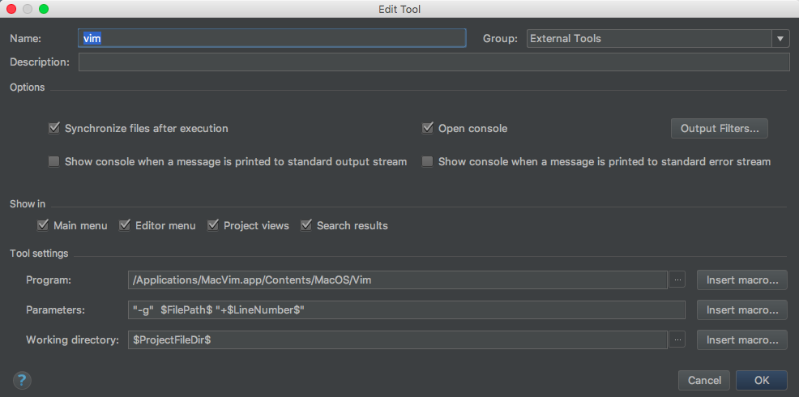
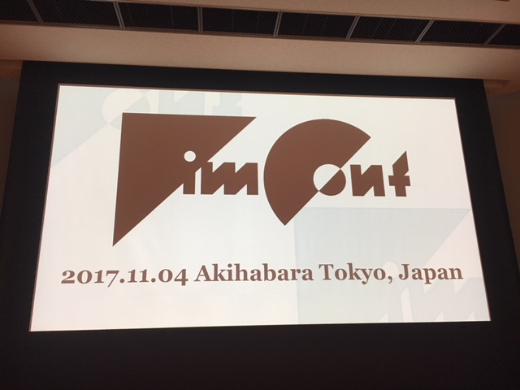

2017年を振り返る¶
2017年は「順風満帆ではなかったけど、納得感のある苦労とか楽しさを味わえて、結果的にはまともに良い方向に向かった一年」でした。それでは仕事、プライベート、健康、スキル(ハード、ソフト)という視点で振り返ってみることにします。
(画像は今年買ったPC用ディスプレイで作業してるところ。昇降式でディスプレイを縦にもできるすぐれものを購入したけど便利。URLはこちら http://amzn.to/2BLuz4h)
仕事面: 4月にPythonistaが集まる会社に転職した¶
所感なんかは JobChangeして半年が過ぎました でも書いた通り。
その後は自分としては大きく変わってる感じはないけど、新しく入ってくる人もいたりして 教える こともでてきたというのが大きいかなと思う。前職では例えば「こうゆうのありますよ」と伝えても興味が無い態度を取られるか、会社としては否定的な立ち位置だったり、そもそも動かせるはずもなさそうだったことを考えると全然違うなーと思うところ。
会社でVimについて当たり前のように話せるのが不思議な気分。
プライベート: 技術コミュニティへ行く頻度が戻った¶
半分あきらめの気持ちみたいなのが芽生えていた時期があって、2013年ぐらいを最後に積極的には行かないようになっていました。ただ普段触れ合う人が変わったおかげか、2016年のあるときから「また行こう」という気持ちが芽生えてきた。
以前話してたりTwitterとかでつながっていたこともあってか、覚えてくれている人もいて、 イベント内で名前を出してもらえたり 、ご縁もあって書籍のレビューに二度かかわらせてもらったりした。
「そろそろ何か書かないの？」とみたいな嬉しいあおりを貰うこともでてきましたが、それはおいおい…ですかね！
健康面: 怪我が多かった¶
2017年の唯一といっていいくらいのマイナス点。
結果的に仕事に集中できたり、技術コミュニティに行くことができたりと悪いことだけではなかったけど、4月に左手首のTFCC損傷、7月に右手薬指のパキって3ヶ月まるまるクライミング禁止、そして8月後半からは月3〜4回の歯医者通いとこれまでのツケが一気に来た感じがある。
どれもまだ経過途中なので、来年春のクライミングシーズンまでにいい状態に持っていけたらなと思ってます。健康大事。
スキル面: ライブラリ・ツール¶
4月に転職してからPython漬けでしたね。仕事で携わったライブラリやツールはこんな感じ。
AWS: EC2, S3, Redshift, etc…とにかくいろいろ
Ansible: 構成管理ツール
Celery: 非同期処理
CircleCI: インテグレーションツール
Django: Webアプリケーションフレームワーク
Git/Github, Mercurial: バージョン管理
Redis: インメモリDB
SQLAlchemy: DB操作ツール、ORMマッパー
Sentry: エラーログ収集
VirtualBox/Vagrant: 仮想環境
gunicorn: HTTPサーバー
nginx: HTTP,プロキシサーバー
pytest: テスティングフレームワーク
etc…
PyCharmのライセンスを購入してもらえるので、新しいものに触れるときも触りやすかった。と同時にVimもこれまでで一番使っていたと思う。両方が使える環境に身を置けているのはありがたい。
携わったプロジェクトでの要素技術が多くて、もうちょっと上手く使えるようになりたいところでもあるので、そのへんはもう少し鍛えたい。PythonやDjangoに詳しい人は社内にゴロゴロいるので自分もキャッチアップしていく。技術は考えるときのベースになるので、今後もキャッチアップしながら「すげー！！！」と感動する体験をしていきたい。
スキル面: エモい？ところ¶
いまだに エモい というのが何を指すのかわかりません。調べても答えがでないので誰か教えて欲しい…まあそれはおいておく。
この業界でいうとライブラリやツールの使い方がハードスキルだとすれば、対するのはソフトスキルということになるのだろうか。チャットツールをメインにして仕事をしてる都合上、「伝えたいことは適切なタイミングやスピードで伝わるようにする」のがなおさら重要だなと感じています。
コミニュケーションにおいて言語情報は7%しか占めていないと どこか で読みました。「そんなつもりで言ったんじゃなかった」とあとから本人がいっても、伝わってしまったことや感じた印象を後からくつがえすのは難しいなと思うので、 しっかりやる ためにはどうしたらいいかなぁと考えながら仕事してた気がします。もちろん1日でできることは限られてるし、つめるところはつめないといけないし、不完全でもはやく出さないときもあるしなので、答えはない。せめて「これ前にもあったぞ….」というコミニュケーションミスや勘違いを少なくしていけるようにしていきたい。
まとめ¶
つらつらと書いてみたら、オチがあるようなないような文章になった。来年のことは来年考えながらやっていく。
PyCharmからVimを開きたい¶
タイトルままです。 Twitterでもつぶやいた通り、IdeaVimってたまにバグりますよね！ そうゆう時、「PyCharmから、今開いているファイルをVimで開きたくなります。」
こんなこといってると、「Vimのキーバインドを使いたいなら最初からVim使えよ」と心の声がいってくるのですが、IdeaVimはIdeaVimで便利に使ってます。ということで、PyCharm(IntelliJ)からVimを開く方法を調べたのでメモ。
前提¶
OS: macOS Sierra/High Sierra
PyCharm: 2017.2.3
IdeaVim: 0.48
やること¶
Preferences > Tools > External Tools から + を押して以下のように入力する
Name: vim
Program:
/Applications/MacVim.app/Contents/MacOS/Vim(Vimのインストールしてる場所)Option:
Open consoleのチェックをOFFPrameters:
"-g" $FilePath$ "+$LineNumber$"Working directory:
$ProjectFileDir$
設定が完了すると以下のようになります。
そして Find Action から vim と探してみると、今PyCharmで開いているファイルが、カーソルが当たってる行を指定して開けます。
やった！これでPyCharmからVimが開ける！
ハマったこと¶
GVimがアクティブになっていないとウィンドウが起動しない ことですね。
アクティブじゃない(GVimのプロセスが起動していない) と External tool 'vim' completed with exit code 0 と画面左下にメッセージが表示されるだけで終了してしまいました。
この時点で「GVimを常に起動しておけばいいや」という結論になったので深追いはしてませんが、GVimがアクティブじゃなくても起動してくれるようになると便利とは思いました。
まとめ¶
またひとつPyCharmからVimが使えるようになって便利
#VimConf2017 に参加しました¶
VimConf 2017 という、トレンド1位のイベントに行ってきました。さすがですね。
https://twitter.com/kashew_nuts/status/926643946431815680
まとめとかできないので、どんな感じだったのかはTwitterで実況してたやつを見てもらったほうがいいかなと思います。
from:kashew_nuts #VimConf2017 - Twitter Search
これ以上ないぐらいVimの濃い話、WiFiあり、各席に有線LAN・コンセントあり、同時翻訳あり、昼食・懇親会あり、無限コーヒーあり、などなどなどなど考えると個人スポンサーになっても全然ペイできるなという感じでした。
コーヒーもVimConf来たって感じにさせてくれました。atwareさんありがとうございます！
https://twitter.com/kashew_nuts/status/926611151500197888
お昼もおいしかった。
https://twitter.com/kashew_nuts/status/926651708557598720
特に印象に残ったこととかやることとか¶
@mattn_jp さん、 @kaoriya さん、 @k-takata さんの3人のLegendからVim(とWindows)の話を聞けたのは最高だった。
vim-jpとかドキュメントから貢献するのいいよーという話の最中に、突然自分の名前がでてきて超ビビった。心拍数跳ね上がったと思う。その節は@mattn_jpさんや@k-takataさん含め、大変お世話になりました！
https://twitter.com/kashew_nuts/status/926671776431554560
offset しらなかった。べんり。
<is_foo>/s+3set fileencodings=ucs-bom,iso-2022-jp,utf-8,euc-jp,cp932をvimrcに追加した。@t9mdさんのvim-mode-plusの話は、実践Vimを生きている感じがして相変わらず凄みがあった。
まとめっぽいもの¶
去年VimConfに出て vim-jp/vimdoc-jaにコントリビューションした話 - Qiita みたいなことやったからか、ありがたいことに話題にも上げてくれた人がしたし、今後も何かしらアウトプットしていけたらいいかなーと思います。来年もでれるようにしていこう。
みなさんお疲れ様でしたー。